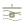

Frahan StonePack is the pre-CAM bridge for dimension stone, monuments, and dry-stone masonry — GPR & scan ingestion, fracture mapping, block packing and cutting, masonry equilibrium, and fabrication export, all inside Grasshopper.

The component library, the architecture map, the research benchmarks, and a new-user deck — all driven by the same source-of-truth catalogue.
All 187 components with full input/output ports, algorithm citations, source paths, and upstream/downstream links.
Browse →The pipeline spine, the five code modules, and a live 93-edge connection graph you can pan, zoom, and click through.
See the map →Ten research areas, each a measured delta over a named baseline. Source-cited benchmarks and real datasets.
Read benchmarks →A slide walkthrough of the whole pipeline for new users — what it is, how the spine fits together, and how to get started.
Open deck →Every kept algorithm is a benchmarked delta over a shipping baseline. A few headlines — the full set is on the research page.
Each Frahan ribbon subcategory is colour-keyed to its pipeline stage. Click through to its components.
Rhino 8 / Grasshopper. Get it from Food4Rhino, or run the Yak package manager inside Rhino and search “Frahan StonePack”, then restart.
_PackageManager